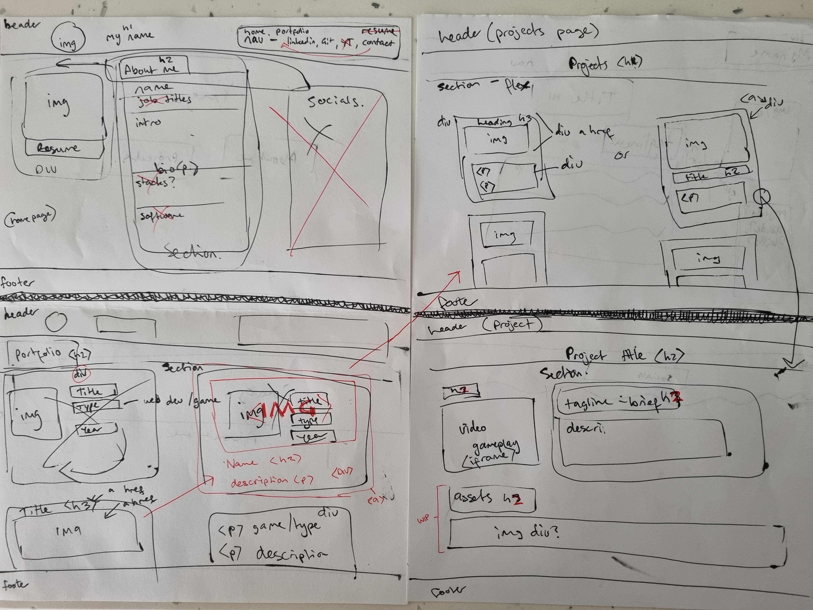

My portfolio
Wireframe
Brief
This is the first project I completed as part of the She Codes Plus program in 2022.
I started by drafting a wireframe to get the structure of my portfolio. I used HTMl and CSS to create the portfolio in Visual Studio Code and published it to GitHub.
This portfolio is responsive and includes a bio, contact form, and links to coding projects.
You can view the code on GitHub.